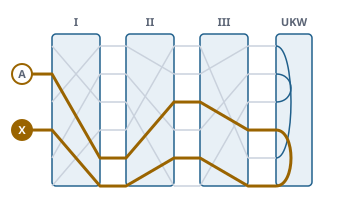

Fünfzig historische Chiffren – verschlüsseln, erkennen, brechen
Funktionsübersicht für die Präsentation des envisionz-Frameworks, Stand 28.09.2026. Ein Katalog von Atbasch bis Kryptos, sechs Chiffriermaschinen von der Enigma bis Purple, Analyse mit Steckbrief und Periodik, automatisches Brechen gegen ein Sprachmodell, eine Sammlung historischer Geheimtexte, dazu Kommandozeile (envisionz-commandline-chiffre) und Oberfläche (envisionz-app-chiffre). Je Verfahren: Zweck, Methoden, Einsatz im Framework, Anwendungen, Beispiele. Die Beispiele sind gekürzt.

Grundsätze des Moduls
Katalog ist die eine, von Hand geführte Liste, ohne Reflexion. Oberfläche, Kommandozeile und Proben sehen nur den Katalog.QG01 in GZIP.Locale.ROOT für jede Groß- und Kleinschreibung; geordnete Sammlungen werden nie mit Map.copyOf kopiert.Katalog, Schlüssel, Alphabete envisionz.chiffre
Verfahren, Katalog, Schluessel, Parameter
Jedes Verfahren trägt Kennung, Name, Epoche, Region, Zeit, Beschreibung und seine Schlüsselteile. Ein Schlüsselteil ist Text, Zahl, Auswahl oder Block und hat eine Vorgabe; damit baut die Oberfläche die Eingabefelder und die Kommandozeile ihre Schalter.
Methoden
Katalog.alle(),Katalog.nach(kennung)Verfahren:kennung(),name(),epoche(),region(),zeit(),parameter(),verschluessele(klar, s),entschluessele(geheim, s),reziprok(),alphabet(s)Schluessel.vorgabe(v),von(v, name, wert, …),von(v, map),mit(name, wert),text(name),zahl(name)Parameter.text,zahl,wahl,block;Epoche,Region;Texte.name(v),beschreibung(v)(DE/EN)
Eingesetzt in
Wofür
Unterricht und Vortrag zur Geschichte der Verschlüsselung; Übungstexte erzeugen.
Beispiel – Vigenère mit dem Lehrbuchschlüssel
Verfahren v = Katalog.nach("vigenere");
Schluessel s = Schluessel.von(v, "schluesselwort", "LEMON");
String geheim = v.verschluessele("attack at dawn", s);
String gruppen = Aufbereitung.inGruppen(geheim, 5);Alphabet und Aufbereitung
Alphabete über Codepunkte: Latein mit 26, 25 (ohne J oder ohne Q) und 36 Zeichen, Hebräisch, Iroha (Kana). Die Aufbereitung bringt Text auf ein Alphabet, setzt Fünfergruppen und kann die ursprüngliche Form (Leerzeichen, Satzzeichen, Groß- und Kleinschreibung) über das Ergebnis legen.
Methoden
Alphabet.LATEIN,LATEIN25,LATEIN25_OHNE_Q,LATEIN36,HEBRAEISCH,IROHA;stellen(text),text(stellen),index(cp)Aufbereitung.buchstaben(text, alphabet),inGruppen(text, groesse),formErhalten(original, ergebnis, alphabet)
Eingesetzt in
Wofür
Hebräische Chiffren (Atbasch) und japanische (Uesugi) in ihrer eigenen Schrift; lesbare Ausgabe mit Satzzeichen.
Handverfahren envisionz.chiffre.verfahren
Von der Antike bis Kryptos – 44 Verfahren ohne Maschine
Gemeinsame Gattungen: Grundlage, darauf Buchstabenweise (Ersetzung Zeichen für Zeichen) und Transposition (Umstellung). Helfer: Quadrat, Mischalphabet, Zahlen, Digraphen. Dazu Sonderfälle mit eigener Logik: Vic mit der Schlüsselableitung nach Hayhanen, Codebuch mit den 40 Meldungen des Wujing Zongyao im Wortlaut, Zodiac mit der 2020 gefundenen Z340-Umstellung, Kryptos K1 bis K3.
| Epoche | Verfahren |
|---|---|
| Antike | Atbasch, Albam, Atbah, Skytale, Yinshu, Polybios-Quadrat, Caesar, Affine Chiffre, Mūladevīya |
| Mittelalter | Einfache Ersetzung, Codebuch (Yinfu, Wujing Zongyao), Homophone Ersetzung |
| Frühe Neuzeit | Alberti-Scheibe, Trithemius, Vigenère, Porta, Uesugi, Autokey, Bacon, Gronsfeld, Jefferson-Walze, Freimaurer-Chiffre |
| 19. Jahrhundert | Buchchiffre (Beale), Beaufort, Variante Beaufort, Playfair, Gartenzaun, Wegumstellung (Spirale), Säulentransposition, Bifid, Zweiquadrat, Vierquadrat, Trifid |
| Weltkriege | Vernam, Einmalblock, ADFGX/ADFGVX, Doppelte Säulentransposition, Chaocipher, Hill, Doppelkasten, Rasterschlüssel 44 |
| Maschinenzeit (Handverfahren) | VIC, Zodiac Z408/Z340, Kryptos K1–K3 |
Eingesetzt in
Katalog, damit in app-chiffre und commandline-chiffre wählbarWofür
Jede Epoche der Kryptographie an ihrem eigenen Verfahren zeigen, vom Tausch im Alphabet bis zur Agentenchiffre.
Beispiel – VIC-Schlüsselableitung
Map<String, String> zeilen = Vic.ableitung(merksatz, datum, kenngruppe, nummer); // Zeilen A bis SChiffriermaschinen envisionz.chiffre.maschine
Enigma und M209
Enigma I, M3 und M4 mit Walzen I bis VIII, β und γ, Umkehrwalzen A, B, C und den dünnen B und C, Doppelschritt der mittleren Walze, Ringen und Steckern. Hagelin M-209 mit sechs Stifträdern (26, 25, 23, 21, 19, 17 Stifte) und einer Trommel aus 27 Stangen, Verschlüsselung nach Beaufort; geprüft an den Probeschlüsseln von Mark J. Blair. Hintergrund, Formeln und Pseudocode →
Methoden
- Schlüsselteile Enigma:
modell,ukw,walzen,ringe,grundstellung,stecker Enigma.maschine(s)→Maschine,Enigma.WALZEN,Enigma.UKW- Schlüsselteile M-209:
stangen,stifte,grundstellung
Eingesetzt in
Katalog; EnigmaBrecher, M209BrecherWofür
Echte Funksprüche nachvollziehen; zeigen, warum der Doppelschritt und die Stecker die Enigma stark und die Umkehrwalze sie schwach machten.
Beispiel – einen Enigma-Spruch entschlüsseln
Verfahren enigma = Katalog.nach("enigma");
Schluessel s = Schluessel.von(enigma, "walzen", "II IV V", "ringe", "BUL",
"grundstellung", "BLA", "stecker", "AV BS CG"); // Schlüssel beispielhaft
String klar = enigma.entschluessele(spruch, s);Typex, Sigaba, Lorenz, Purple
Typex: fünf Walzen, die rechten zwei als Statoren, Walzen mit fünf, sieben oder neun Kerben, umkehrbar einsetzbar. SIGABA: fünf Chiffrierwalzen, deren Fortschaltung fünf Steuer- und fünf Indexwalzen unregelmäßig bestimmen. Lorenz SZ40/42: zwölf Nockenräder erzeugen einen 5-Bit-Schlüssel für Fernschreiber (ITA2). Purple: Steckerbrett in Sechser und Zwanziger, Schrittschaltwerke statt Walzen.
Methoden
- über
Katalog.nach("typex" | "sigaba" | "lorenz" | "purple")undSchluessel Purple.stellungen(s, n),Sigaba.schritte(s, n)– Schaltfolgen zum Prüfen der MechanikLorenz.ITA2– Fernschreibalphabet
Eingesetzt in
KatalogWofür
Die Maschinen des Zweiten Weltkriegs nebeneinander: die im Krieg nie gebrochene SIGABA neben den gebrochenen Enigma, Lorenz und Purple.
Purple.stellungen geprüft: eine frühere Gegenprobe blieb grün, weil ihr Anker die Stellung des langsamen Zwanzigers nie erreichte.Analyse envisionz.chiffre.analyse
Steckbrief, Haeufigkeit, Periodik
Der erste Blick auf einen Geheimtext: Zeichenvorrat, Häufigkeiten, Koinzidenzindex, Chi² gegen Deutsch und Englisch, Friedman-Schätzung, Kasiski-Abstände, wahrscheinliche Periodenlängen. Daraus eine begründete Vermutung der Verfahrensfamilie; jede Vermutung trägt ihre Begründung, bei kurzen Texten steht die Unsicherheit dabei. Hintergrund, Formeln und Pseudocode →
Methoden
Steckbrief.von(geheim):art(),koinzidenzindex(),chiDeutsch(),wieDeutsch(),friedman(),laengen(),kasiski(),befunde(),vermutungen(),alsText()new Haeufigkeit(text, alphabet):zaehlung(),anteile(),koinzidenzindex()Periodik.kasiski(text, max),wiederholungen(text, mindestens),spaltenIndex(x, periode),friedman(ic, n, sprachIc),laengen(x, max, sprachIc)
Eingesetzt in
Wofür
Einen unbekannten Geheimtext einordnen, bevor ein Brecher läuft.
Beispiel – Steckbrief eines Geheimtexts
Steckbrief sb = Steckbrief.von(geheim);
System.out.println(sb.alsText()); // Befunde und begründete Vermutungen
List<String> kennungen = sb.vermutungen(); // z. B. Verfahrenskennungen für den BrecherSprachmodell und Tafelbau
Die Bewertung eines Texts ist die Summe der Logarithmen seiner Vierergruppen: das Maß, gegen das alle Brecher arbeiten. Dazu eine Sprachähnlichkeit von 0 (Zufall) bis 1 (Sprache im Mittel). Die Tafeln sind je ein Byte je Vierergruppe (264), quantisierte log10-Häufigkeit, GZIP-gepackt.
Methoden
Sprachmodell.DEUTSCH,ENGLISCH,nach("de" | "en")bewerte(text | stellen),aehnlichkeit(text),chiQuadrat(zaehlung),koinzidenzindex()Tafelbau.baue(dateien, quadgramme, einzeln)→Ergebnis(buchstaben, verschiedene, untergrenze, obergrenze)
Eingesetzt in
Wofür
Entscheiden, ob ein Entschlüsselungsversuch nach Sprache aussieht; Tafeln für weitere Sprachen bauen.
Brechen ohne Schlüssel envisionz.chiffre.brecher
Brecher, Brecherliste, Kandidat, Fortschritt, Gluehen
Zu jedem Verfahren findet die Brecherliste den zuständigen Brecher. Er liefert Kandidaten mit Schlüssel, Klartext, Bewertung und Sprachähnlichkeit; der Klartext entsteht durch das Verfahren selbst und stimmt damit garantiert. Brecher über Anordnungen (Felder, Tafeln, Zuordnungen) nutzen dieselbe Abkühlungsschleife. Ein bekannter Klartextanfang kann als Vorgabe mitgegeben werden. Hintergrund, Formeln und Pseudocode →
| Brecher | Verfahren | Laufzeit |
|---|---|---|
Durchprobieren | Caesar, Affin, Atbasch, Albam, Atbah, Trithemius | sofort |
Periodisch, AutokeyBrecher | Vigenère, Beaufort, Variante Beaufort, Gronsfeld, Porta; Autokey | schnell |
ErsetzungsBrecher, UmstellungsBrecher | Einfache Ersetzung, Mūladevīya; Skytale, Gartenzaun, Spirale, Säulentransposition | schnell |
HillBrecher | Hill 2×2 bis 4×4, zeilenweise nach Bauer und Millward | schnell |
PlayfairBrecher, QuadratBrecher, BifidBrecher | Playfair; Zweiquadrat, Vierquadrat; Bifid, Trifid | auf ausdrückliche Wahl |
AdfgvxBrecher, DoppelsaeulenBrecher, HomophonBrecher | ADFGVX; Doppelte Säulentransposition; Homophone Ersetzung | auf ausdrückliche Wahl |
EnigmaBrecher | Enigma I, M3 und M4 | Minuten, M4 deutlich länger |
M209Brecher | Hagelin M-209, nur mit bekanntem Klartext | auf ausdrückliche Wahl |
Enigma: Was durchsucht wird, legt das Modell fest – Enigma I mit den Walzen I–V, M3 mit I–VIII, M4 zusätzlich mit Zusatzwalze β oder γ in jeder Stellung und dünner Umkehrwalze (deutlich länger). ADFGVX und ADFGX gehen in zwei Stufen: erst die Spaltenfolge, dann das Feld. Hill wird zeilenweise gebrochen, jede Zeile der Umkehrmatrix für sich.
Noch ohne Brecher sind Einmalblock, Freimaurer-Chiffre, Doppelkasten, Rasterschlüssel 44, Typex, SIGABA, Lorenz SZ40/42, Purple, VIC, Zodiac und Kryptos. Bei Typex, SIGABA und Lorenz sind Walzen und Nocken eigene Auslosungen, weil die echten nicht veröffentlicht sind; Purple und die Schlüsselableitung von VIC sind an Originaltexten geprüft.
Methoden
Brecherliste.fuer(v),angreifbar(v)brich(v, geheim, sprache, fortschritt[, vorgabe])→List<Kandidat>,schnell(),dauer(),kann(v)Kandidat(verfahren, schluessel, klartext, bewertung, aehnlichkeit);Brecher.Vorgabe(eingestellt, bekannt);Fortschritt.STILL
Eingesetzt in
Wofür
Vorführen, wie klassische Chiffren fallen; Übungstexte der Sammlung lösen.
Beispiel 1 – vermuten und brechen
Verfahren v = Katalog.nach(Steckbrief.von(geheim).vermutungen().get(0));
Brecher b = Brecherliste.fuer(v); // null, wenn nicht angreifbar
List<Kandidat> k = b.brich(v, geheim, Sprachmodell.DEUTSCH, Fortschritt.STILL);
String klar = k.get(0).klartext(); // k.get(0).schluessel(), aehnlichkeit()Beispiel 2 – M-209 mit bekanntem Anfang
Verfahren m209 = Katalog.nach("m209");
List<Kandidat> k = Brecherliste.fuer(m209).brich(m209, geheim, Sprachmodell.ENGLISCH,
Fortschritt.STILL, new Brecher.Vorgabe(null, bekannterAnfang));Sammlung historischer Geheimtexte envisionz.chiffre.sammlung
Sammlung und Stueck
Gelöste, ungelöste und Übungsstücke aus resources/sammlung.txt, je Stück Titel, Zeit, Region, Status, Verfahren, Schlüssel, Beschreibung, Quelle und Geheimtext. Gelöste Stücke ergeben mit ihrem Schlüssel den Klartext, Übungen lassen sich brechen.
Methoden
Sammlung.alle(),nach(kennung),lade(name)Stueck:kennung(),titel(),status()(GELOEST,UNGELOEST,UEBUNG),geheimtext(),verfahrenObjekt(),schluesselObjekt()
Eingesetzt in
Wofür
Beale, Zodiac, Kryptos und die anderen berühmten Texte selbst in der Hand haben.
Beispiel – gelöstes Stück entschlüsseln
Stueck s = Sammlung.nach("beale-b2");
String klar = s.verfahrenObjekt().entschluessele(s.geheimtext(), s.schluesselObjekt());Kommandozeile cmd.chiffre · envisionz-commandline-chiffre
Chiffre – acht Aufgaben im Hausformat -name:wert
Liste, Auskunft, ver- und entschlüsseln, Analyse, Brechen, Sammlung, Tafelbau. Schlüsselteile werden mit dem Namen des Parameters übergeben (-op:info nennt sie), ein Wert @datei wird aus der Datei gelesen. main ruft nur lauf(args, aus, err), die Probe prüft ohne System.exit. Rückgabewerte: 0 in Ordnung, 1 ohne Schalter oder Hilfe, 2 falscher Schalter oder Schlüssel, 3 sonstiger Fehler, 10 beim Brechen kein überzeugender Klartext (Sprachähnlichkeit unter 0,6).
Beispiele
Chiffre -op:liste
Chiffre -op:info -verfahren:vigenere
Chiffre -op:ver -verfahren:vigenere -schluesselwort:LEMON -text:"attack at dawn"
Chiffre -op:ent -verfahren:enigma -walzen:"II IV V" -ringe:BUL -grundstellung:BLA -ein:spruch.txt
Chiffre -op:analyse -ein:geheim.txt
Chiffre -op:brich -sprache:de -ein:geheim.txt
Chiffre -op:sammlung -stueck:beale-b2 -loesung:ja
Chiffre -op:tafel -de:<korpusordner> -en:<korpusordner> -ziel:<ordner>Einsatzmatrix im Framework
Welche Module welche Teile heute nutzen, im Quelltext gezählt (ohne Proben).
| Modul | Katalog & Schlüssel | Handverfahren | Maschinen | Analyse | Sprachtafeln | Brecher | Sammlung | Wofür |
|---|---|---|---|---|---|---|---|---|
| app-chiffre | ● | ● | ● | ● | ● | ● | ● | Oberfläche: Verfahren, Analyse, Brechen, Sammlung, Chronik |
| commandline-chiffre | ● | ● | ● | ● | ● | ● | ● | Kommandozeile mit acht Aufgaben, auch Tafelbau |
Katalog erreicht; die Punkte in diesen Spalten stehen dafür. Das Modul ist in sich geschlossen: außer der eigenen Kommandozeile und Oberfläche ruft es niemand auf, und es ruft selbst niemanden.